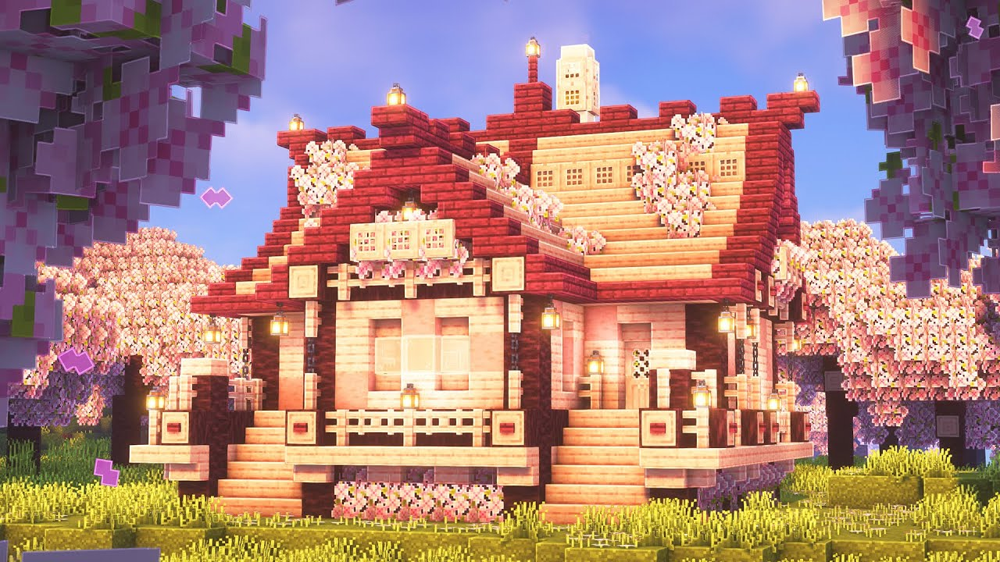
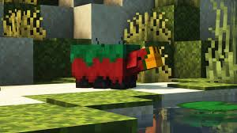
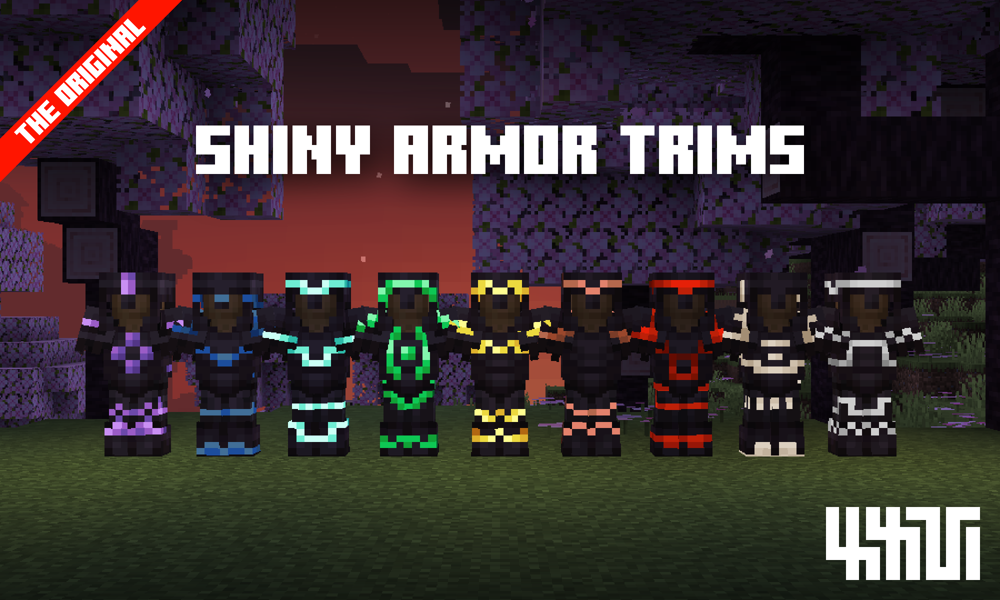

Discover the Trails & Tales Update!

Share your stories,
great and small.
Ride a camel, hatch a sniffer, and trim your armor. Find a cherry grove or an
archeology site. Craft with bamboo, create mob sounds, and hang your signs.
Write and store your books in the chiseled bookshelf, because every story
matters! Start Minecraft on your favorite device to get started. The Trails &
Tales Update will download automatically after release.

Cherry
Blossom
Biome
Explore the rare cherry blossom biome. Find
it to discover the cherry tree sapling, wood
set, and pink flower carpet block!
Sniffing for
seeds
Bring the extinct sniffer back to the
Overworld. Find its eggs, help them hatch,
and watch as your sniffer digs up seeds for
you to plant!
ADVENTURE
MODE
Armor trims show the world that youve
traveled, survived, and dressed for the
occasion! Hunt down the templates and use
the smithing table to craft and dye them.
Create your own look based on your unique
Minecraft story.
